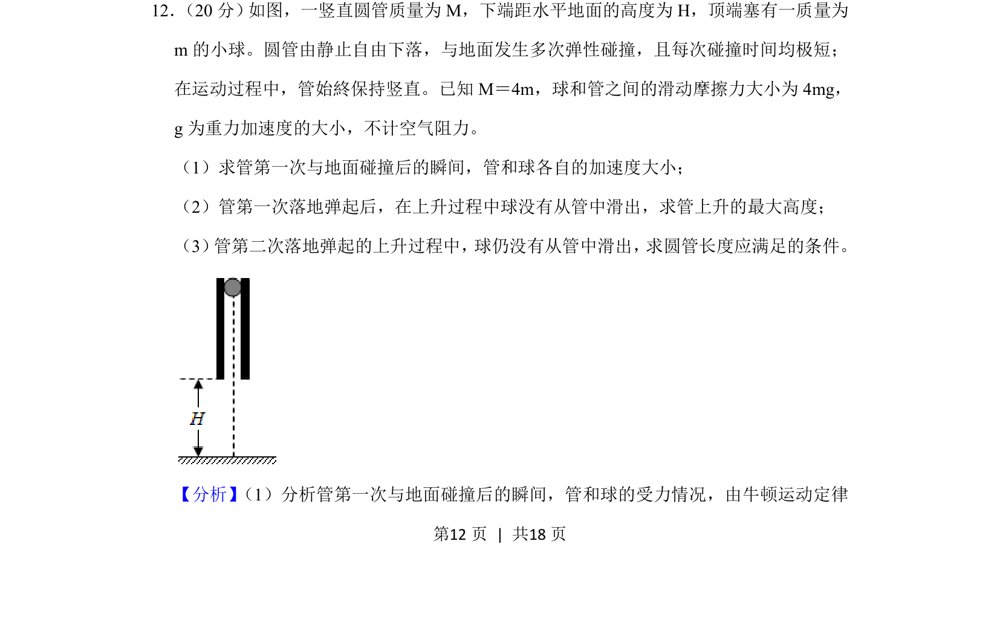
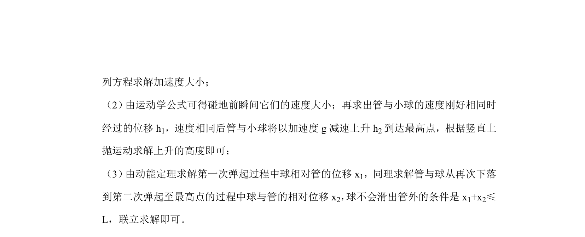
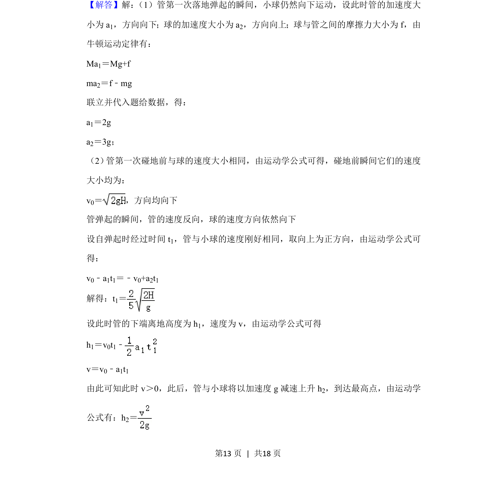
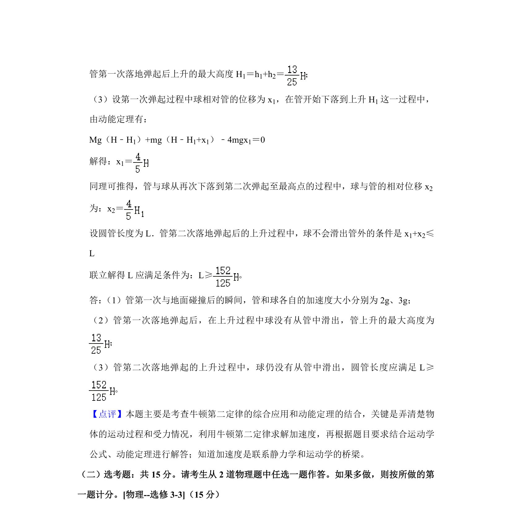

考点：牛顿第二定律 滑动摩擦力 匀变速直线运动 弹性碰撞


考查竖直圆管与小球的多过程运动，涉及牛顿定律、摩擦力和弹性碰撞分析。


📄 原 PDF 第 12 页：
素材/真题/吉林/2008-2024·（吉林）物理高考真题/2020年高考物理试卷（新课标Ⅱ）（解析卷）.pdf
12． （20分） 如图，一竖直圆管质量为M，下端距水平地面的高度为H，顶端塞有一质量为 m的小球。圆管由静止自由下落，与地面发生多次弹性碰撞，且每次碰撞时间均极短； 在运动过程中，管始終保持竖直。已知M＝4m，球和管之间的滑动摩擦力大小为4mg， g为重力加速度的大小，不计空气阻力。 （1）求管第一次与地面碰撞后的瞬间，管和球各自的加速度大小； （2）管第一次落地弹起后，在上升过程中球没有从管中滑出，求管上升的最大高度； （3） 管第二次落地弹起的上升过程中， 球仍没有从管中滑出， 求圆管长度应满足的条件。
【分析】 （1）分析管第一次与地面碰撞后的瞬间，管和球的受力情况，由牛顿运动定律